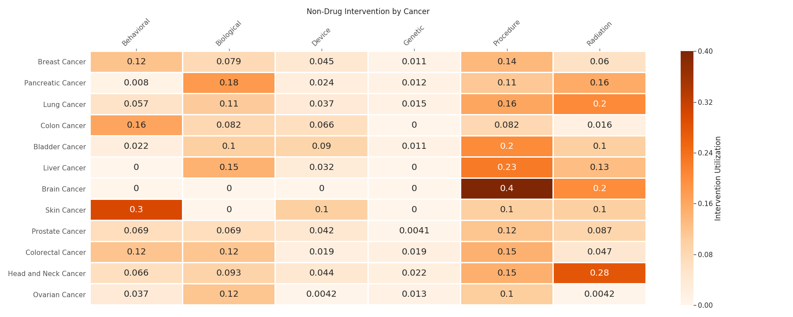
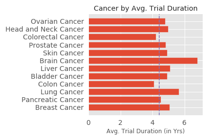

Assignment 3: Melody's Data Visualization
The cancer clinical trial dataset provides an objective, holistic view that helps us understand the nature of different cancers. I am most interested in seeing the trial duration for each cancer and the extent to which different intervention methods are utilized for different cancers, hoping to find a type of cancer that is viable for self-diagnosis.
- Heatmap: Non-Drug Intervention Utilization by Cancer 
- Horizontal Bar Chart: Cancer by Avg. Trial Duration 
When plotting the heatmap, I picked some prevalent non-drug intervention methods and popular cancers.
Interestingly, Behavioral intervention (i.e. questionnaires) was most commonly used in trials for skin, colon and breast cancers. It can be seen that patients are encouraged to perform self-control and self-examination to monitor treatment outcomes. In particular, skin cancer patients need to monitor their sun exposure in order to have a better treatment response; colon cancer patients have to monitor their dietary behavior in order to have higher survival rates; and breast cancer patients need to check the conditions of breast lumps.
Biological interventions were more prevalent in aggressive cancers with low survival rates at late stages when they are typically found such as pancreatic cancer (1% 5-year survival rate in IV stage)).
Radiation was most common in head and neck, lung and brain tumors. These tumors have high risk of being spread throughout the body and develop metastases.
Most trials last between 3.5 years to 5 years on average. Brain cancer is the only one that stands out: on average brain cancer clinical trial lasts around 7 years. But the reason seems to be not in the fact that brain cancer experimental treatments get patients into remission phase slower. On the opposite, these trials' primary goal is to prove that experimental drug is safe for the patients, whether it works or not is not where science of brain cancer is, yet.